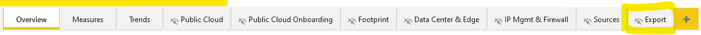

Telefonica C&DC KPI Dashboard and Export
User Documentation
This part describes the functions of the dashboard and how to use it.
Export Data
The process of exporting the current dashboard data is the same for PowerBI Desktop and the cloud version of PowerBI. Note that the exported data is always based on the current dashboard filters. For example if you choose July 2022 in the date picker, you will also export data from July 2022.
Currently you can only export the data if you have the rights to edit the dashboard. You also need ownership of the Power Automate flow.
In PowerBI navigate to Workspaces/CDC KPI Dashboard
Choose the newest version of the report and open it
From the toolbar choose the “Edit” mode
From the bottom panes choose “Export” 
Press Strg and left click on the “Export Report” button
You can now find your exported CSV file under:
C&DC_PSM_Working Space - Performance Mgmt/Documents/CDC KPI Mgmt/ Monthly Reports/Dashboard ExportDeveloper Documentation
This part describes how you need to setup the workspace for Development on the application.
Link to repository: https://github.com/msg-3DM/Telefonica_KPI_Reporting
Dependencies
Cloning the repository
First you need to clone the project repository to your local system. There are multiple ways to do this:
Using git bash:
git clone https://github.com/msg-3DM/Telefonica_KPI_Reporting.gitUsing GitHub Desktop:
Click on “File” and “Clone repository…” and use the link of the repository to clone to a local folder.
Creating and activating the Virtual Environment for Python:
For this step you need to have the specified Python version already installed. You also need the pip package virtualenv. To install virtualenv use the following command:
pip install virtualenvUsing Windows PowerShell
- Open a PowerShell window with administration rights and navigate to the local repository folder
- Create an environment called “venv” in the local folder
virtualenv venv- Set the execution policy to “Bypass”
Set-ExecutionPolicy -ExecutionPolicy Bypass -Scope Process -Force- Activate the environment
./venv/Scripts/activate.ps1Using Terminal/CMD
- Open a CMD window with administration rights and navigate to the local repository folder
- Create an environment called “venv” in the local folder
virtualenv venv- Activate the environment
./venv/Scripts/activateInstalling required packages
- Activate the virtual environment
- Go into the local repository folder and install the packages with pip:
pip install -r requirements.txtGenerating a report
- Edit the
config.ymlfile - Run the application
python reporting.pyDepending on your version of python the command can differ:
python3 reporting.py- A new file called
report.docxwill be created